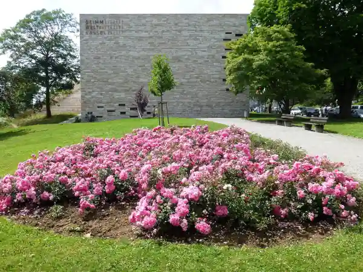
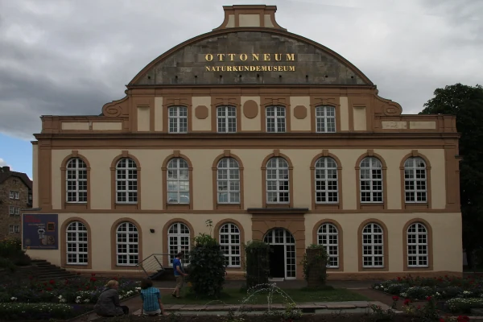
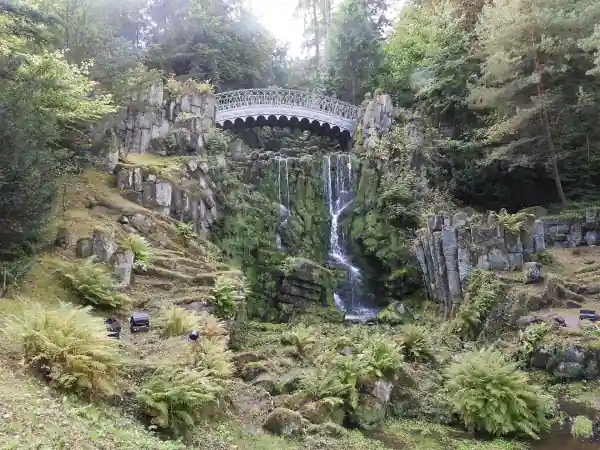

Start / Mit Kindern
Aaron Schiele
geprüft am 09.10.2026
geprüft am 09.10.2026
Überblick: Ausflugsziele für Kinder in Kassel
| Ziel | Was Kinder dort erleben | Eintritt für Kinder | Geöffnet |
|---|---|---|---|
| Bergpark Wilhelmshöhe | Wasserspiele, Wege, Ausblick | frei | ganzjährig |
| Löwenburg | Burg mit Führung | unter 18 frei | Sommer Di bis So, Winter Fr bis So |
| Grimmwelt | Märchen zum Mitmachen | unter 6 frei, 6 bis 17 Jahre 7 Euro | Di bis So |
| Naturkundemuseum | Saurier, Haie, Mammuts | unter 6 frei, ermäßigt 3 Euro | Di bis So |
| Planetarium (Orangerie) | Vorstellungen zum Sternenhimmel | unter 18 Jahren 2 Euro | Vorstellungen nach Kalender |
| Karlsaue | großer Park an der Fulda | frei | ganzjährig |
| Hessisches Landesmuseum | Geschichte und Turm | unter 18 frei | Di bis So |
Bergpark Wilhelmshöhe: Burg, Herkules und Wasser
Der Bergpark kostet keinen Eintritt und ist für Kinder ein riesiger Abenteuerspielplatz aus Wald, Wegen und Wasser. Drei Ziele sind besonders spannend.
Die Löwenburg sieht aus wie eine Ritterburg aus dem Mittelalter – ein Fest für kleine Ritter und Burgfräulein. Hinein kommst du nur mit Führung zur vollen Stunde, also Tickets früh buchen. Kinder unter 18 sind frei, Erwachsene zahlen mit dem Tagesticket Wilhelmshöhe 8 Euro. Im Winter ist nur freitags bis sonntags offen. Die Burg ist nicht barrierefrei, den Kinderwagen lässt du besser zu Hause. Mehr unter Löwenburg Kassel.
Der Herkules steht ganz oben auf dem Berg und schaut über die ganze Stadt. Hinauf kommst du mit Tram 4 bis Druseltal und Bus 22. Die Treppen neben den Kaskaden haben kein Geländer – kleine Kinder dort an die Hand nehmen. Mehr unter Herkules Kassel.
Die Wasserspiele sind das große Erlebnis: In der Saison rauscht ab 14.30 Uhr das Wasser vom Herkules den Berg hinunter, über Kaskaden und einen Wasserfall bis zur Großen Fontäne. Sie laufen zwischen 1. Mai und 3. Oktober an jedem Mittwoch und Sonntag und an Feiertagen in Hessen, Eintritt kostet das nicht. Mit kleinen Kindern musst du nicht die ganze Strecke laufen: Die Große Fontäne um 15.45 Uhr liegt unten am Schloss und ist der krönende Schluss. Die Saison 2026 ist vorbei. Mehr unter Wasserspiele Kassel.
Unser Tipp: Wer in Bad Wilhelmshöhe übernachtet, läuft in 14 Minuten flach zum Schloss. Zum Herkules ist es mit Kindern zu steil, da ist der Bus die bessere Wahl.
Grimmwelt: Märchen zum Anfassen
In der Grimmwelt dürfen Kinder Märchen anfassen: An der DORNENHECKE warten der sprechende Spiegel, der Froschkönig, Zwerge und das Lebkuchenhaus, und mit der Brotkrumen-Spur „Weltreise“ geht die ganze Familie auf Entdeckungstour. Die Ausstellung ist für Kinder ab 6 Jahren gedacht, die Märchenwelt gefällt aber auch Jüngeren. Die Familienkarte kostet 25 Euro, Kinderwagen dürfen mit. Mehr unter Grimmwelt Kassel.
Naturkundemuseum im Ottoneum: Saurier und Mammuts
Saurier, Haie und Mammuts – im Naturkundemuseum am Steinweg staunen Kinder über Tiere aus Urzeit und Meer. Ab 10. Oktober 2026 zeigt die Sonderausstellung „Höher Schneller Weiter“, wie Tiere sich bewegen. Montags ist zu, mittwochs offen bis 20 Uhr. Kinder unter 6 sind frei, ältere Kinder zahlen 3 Euro, Erwachsene 5 Euro. Einen Wickeltisch gibt es auch.
Planetarium und Karlsaue
In der Orangerie liegt Hessens größtes Planetarium: Licht aus, Sterne an. Unter 18 Jahren kostet eine Vorstellung 2 Euro, Erwachsene zahlen 8 Euro. Kinder unter 3 Jahren dürfen nicht mit in den Saal. Die Vorstellungszeiten stehen im Kalender von Hessen Kassel Heritage.
Gleich vor der Orangerie beginnt die Karlsaue, ein weiter Park an der Fulda mit viel Platz zum Rennen, frei zugänglich. An der Orangerie startet auch der Planetenwanderweg, und zur Karlsaue gehört die Blumeninsel Siebenbergen. Mehr unter Orangerie und Karlsaue.
Hessisches Landesmuseum: frei für Kinder
Im Landesmuseum am Brüder-Grimm-Platz geht es durch die Geschichte Hessens, und zu jeder vollen und halben Stunde hinauf auf den Turm mit Blick über die Stadt. Unter 18 Jahren ist der Eintritt frei.
Häufige Fragen
Was kann man in Kassel mit Kindern kostenlos machen?
Bergpark, Wasserspiele und Karlsaue kosten nichts. In Löwenburg, Schloss Wilhelmshöhe und Landesmuseum sind Kinder unter 18 frei.
Was ist in Kassel mit Kindern bei schlechtem Wetter gut?
Grimmwelt, Naturkundemuseum, Planetarium und Landesmuseum. Mehr Ideen unter Kassel bei Regen.
Ab welchem Alter lohnt sich die Grimmwelt?
Die Ausstellung ist ab 6 Jahren gedacht, die Märchenwelt an der DORNENHECKE gefällt auch Kleineren.
Kann man die Löwenburg mit Kindern besichtigen?
Ja, mit Führung zur vollen Stunde, und Kinder unter 18 sind frei. Mit dem Kinderwagen wird es schwierig, weil die Burg nicht barrierefrei ist.
Wann sind die Wasserspiele?
Zwischen 1. Mai und 3. Oktober, jeweils mittwochs und sonntags sowie an Feiertagen in Hessen, Beginn 14.30 Uhr. Die Saison 2026 ist vorbei.
Quellen abgerufen am 09.10.2026
- Hessen Kassel Heritage Löwenburg · Schloss Wilhelmshöhe · Wasserspiele · Hessisches Landesmuseum · Planetarium · Karlsaue
- Stadt Kassel Naturkundemuseum, Besuch · Naturkundemuseum · Anreise mit dem ÖPNV
- Grimmwelt Familien und Kinder · Häufige Fragen
Weiterlesen

Grimmwelt Kassel
Grimmwelt Kassel: Öffnungszeiten, Eintritt für Erwachsene, Kinder und Familien, was die Ausstellung zeigt, Dachterrasse und Anreise mit Tram und Auto.
Weiterlesen
Kassel bei Regen
Kassel bei Regen: Schloss Wilhelmshöhe, Grimmwelt, Naturkundemuseum, Landesmuseum, Planetarium und Kurhessen-Therme mit Öffnungszeiten und Preisen.
Weiterlesen
Bergpark Wilhelmshöhe Kassel
Bergpark Wilhelmshöhe in Kassel: was dich im UNESCO-Welterbe erwartet, Eintritt (Park frei), ein Rundweg bergab für einen Tag und die Anreise.
Weiterlesen